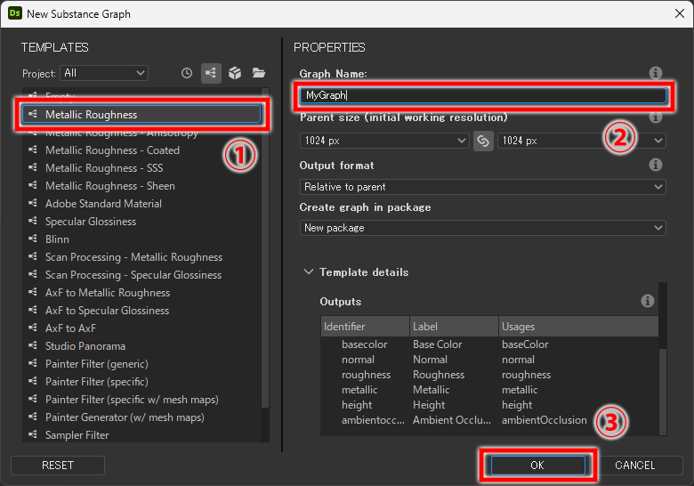

SubstanceDesigner
Substance Designer クイックスタートガイド
第1回：パッケージ・グラフ
2024/02/01

SubstanceDesignerを勉強したいけど、何を勉強したらいいか分からない。。
公式のチュートリアルや書籍もいいけど、時間もお金もかけたくないんだよな。。
そんな人のために、最低限の知識をサクッと学べるコラムを書いていこうと思います。
概要
このコラムでは、SubstanceDesignerで自作のマテリアルを作成するのに必要な最低限の知識を解説していきます。
詳細な解説は公式チュートリアルやドキュメントにお任せするとして、「これさえ知っておけば大丈夫！」という状態を目指します。
(SubstanceDesigner バージョン13.1.0 を使用して解説します。)
大まかなワークフロー
まず始めに、自作のマテリアルをSubstanceDesignerで書き出すまでの工程を解説します。
ざっくりと、工程は以下の通りです。
- 新規パッケージ・グラフを作る
- グラフを組む
- パッケージをsbsar形式で書き出す
以上！これだけです。
パッケージ・グラフとは
まずは、パッケージ・グラフについて解説します。
パッケージ
SubstanceDesignerでは、マテリアルはパッケージ単位で書き出します。
パッケージは、複数のグラフを内包することができ、また画像などのリソースデータも格納することができます。
SubstanceDesignerのデータはsbsファイルという形式で保存しますが、sbsファイル = パッケージ という認識で問題ないです。
グラフ
グラフとは、複数のノードをまとめたものです。
グラフは、必ず1つ以上の「アウトプットノード」が配置されている必要があります。
実は、SubstanceDesignerには色んな種類のグラフがあり混同しやすいのですが、ここでいうグラフとは「コンポジショングラフ」のことです。
「テクスチャを生成するためのグラフなんだな」と思ってもらえれば大丈夫です。
ちなみに、他にもファンクショングラフやMDLグラフ、v13.0でひっそりと姿を消したモデルグラフなんてものもありますが、本コラムでは知っておく必要はありません。
パッケージ・グラフを作成する
では、実際にパッケージ・グラフを作成する手順を解説します。
新規でグラフを作成するには、File > New > Substance graph を選択します。
(ショートカットは Ctrl+N です。)
選択すると、以下のようなダイアログが表示されます。

左側のペインには、グラフのテンプレートがデフォルトでいくつか用意されています。
テンプレートとは、アウトプットノードという出力テクスチャを指定するノードのセットがあらかじめ配置されているグラフのことです。
どのテンプレートを使用するかはレンダラーでどのテクスチャを使用するかによりますが、PBRマテリアルを作成する場合、通常は「Metallic Roughness」を使用すれば問題ありません。
次に、Graph Name の項目にグラフ名を入力します。
命名に迷った場合は、マテリアルとしてSubstance Painterのシェルフに表示される名前をつけておけば問題ないでしょう。
それ以外の設定は後から変更できますので、OKを選択します。

すると、エクスプローラービュー（画像左側）にパッケージに格納されたグラフが表示されます。
グラフビュー（画面右側）には、作成されたグラフの中身が表示されます。
グラフはパッケージに必ず格納されている必要があるので、この段階でパッケージも自動で作成されています。
アウトプットノードは、テンプレートで選択したものが配置されているはずです。
以降の工程では、最終出力結果のノードをそれぞれのアウトプットノードに接続していきます。
パッケージの保存
最後に、パッケージを保存します。
エクスプローラービューでパッケージを 右クリック > Save を選択、または、グラフを選択した状態で Ctrl+S を押します。
すると、エクスプローラーが立ち上がるので、パッケージ名を入力してsbsファイルとして保存すれば完了です！
まとめ
というわけで、今回はパッケージ・グラフの概要、作り方を解説しました。
次回は、SubstanceDesignerの主要な機能である「ノード」について解説しようと思います。